summer cicadas
夏蟬
lisle, il | june 2024
This year, the 13-year brood will also co-emerge with the 17-year brood slightly south in Illinois. Both have prime-numbered life cycles, creating a convergence that happens once every 221 years. It’s a long time, surpassing even the miracles of auroras or solar eclipses. Way more romantic.
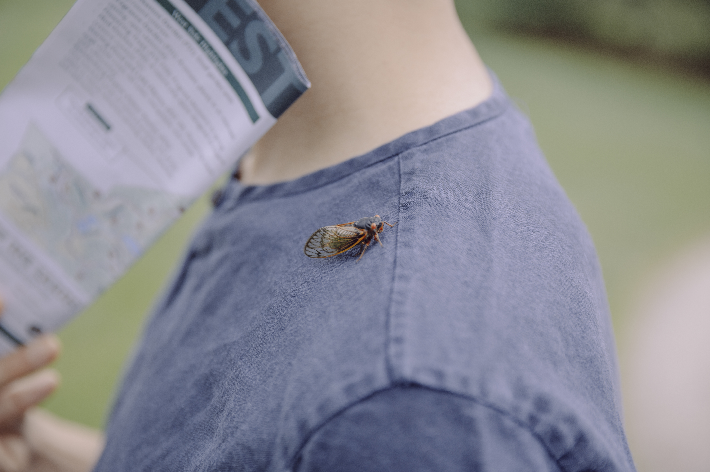
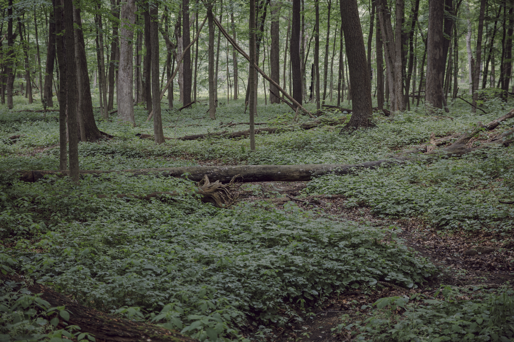
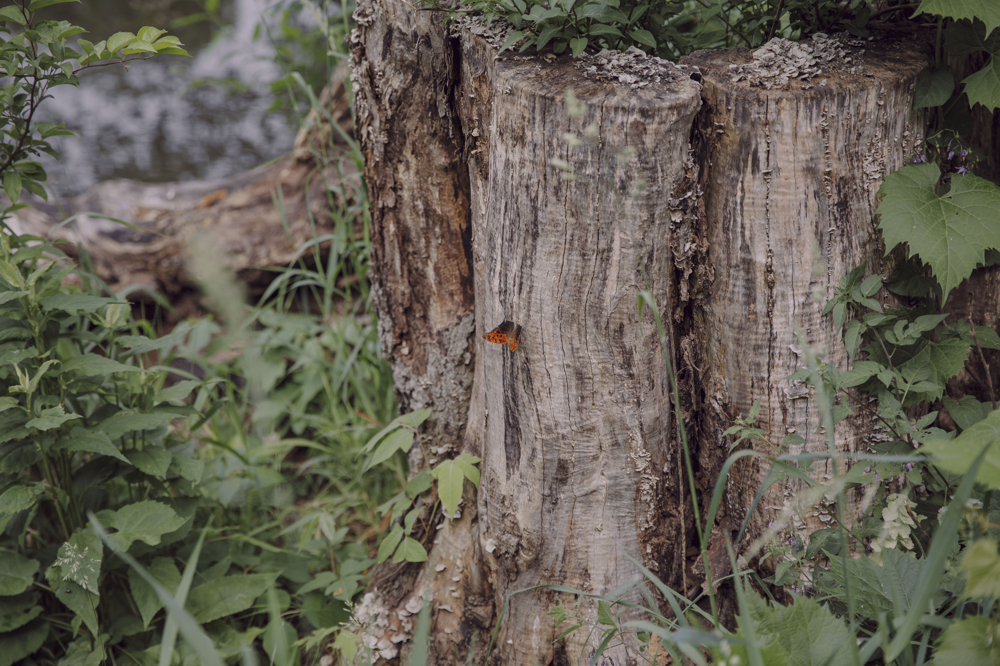
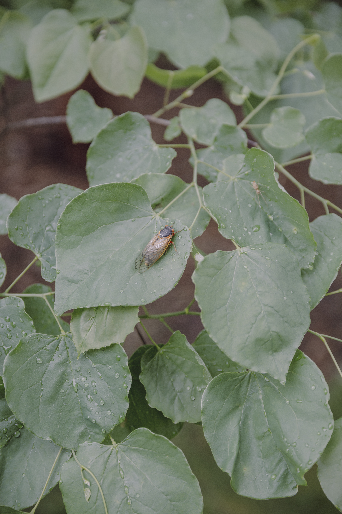
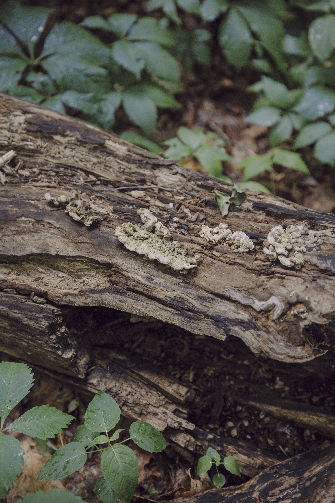
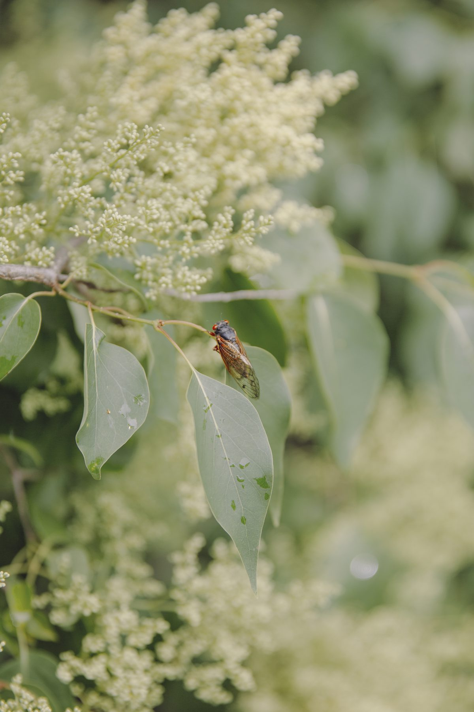
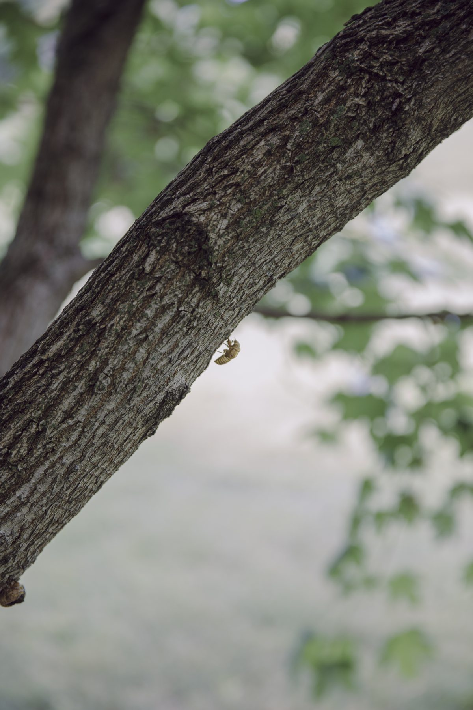
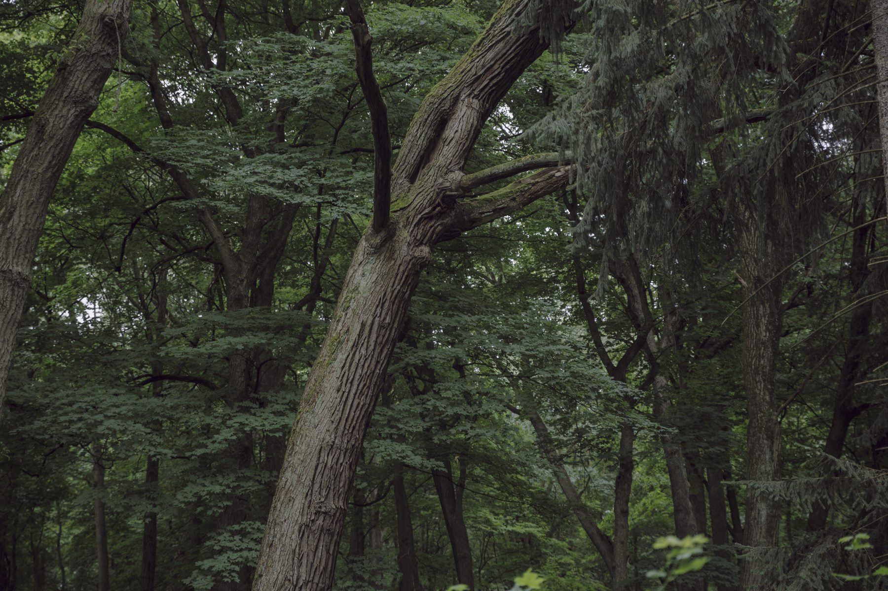
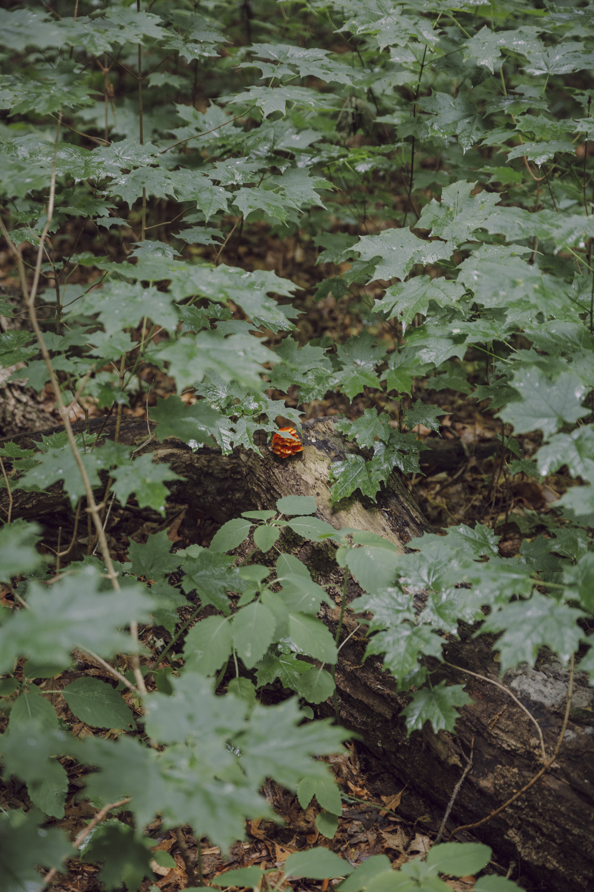
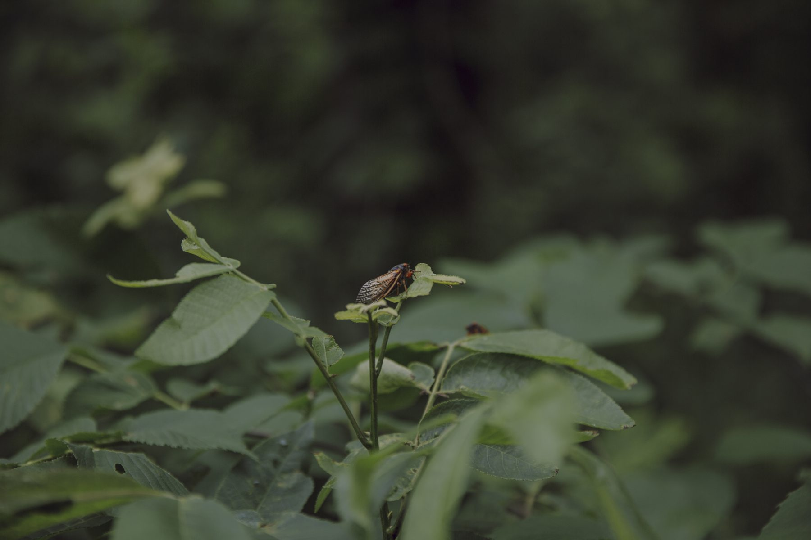
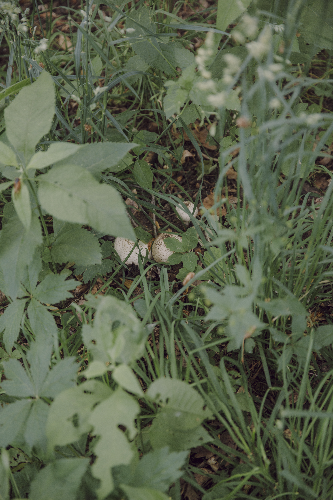
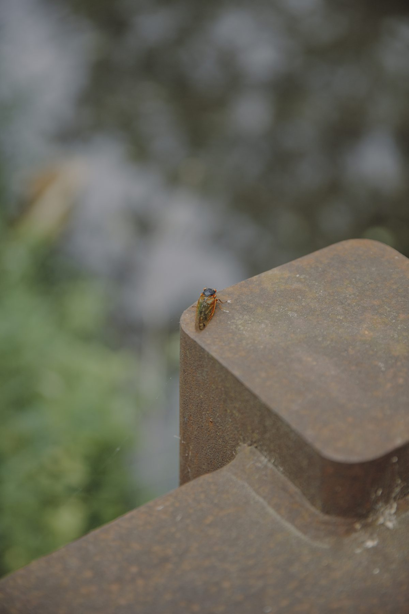
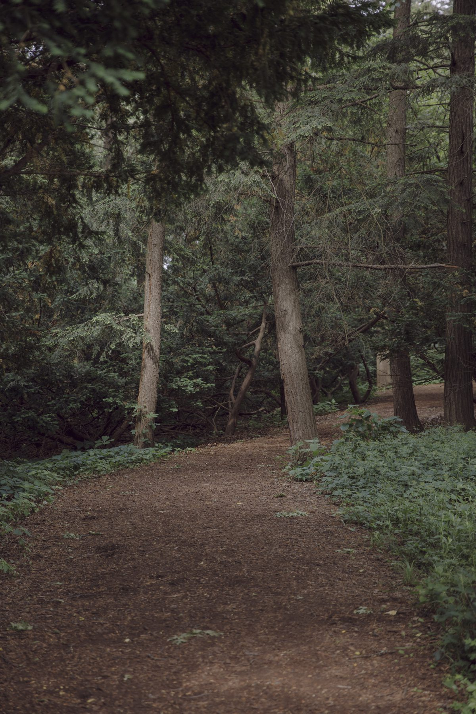
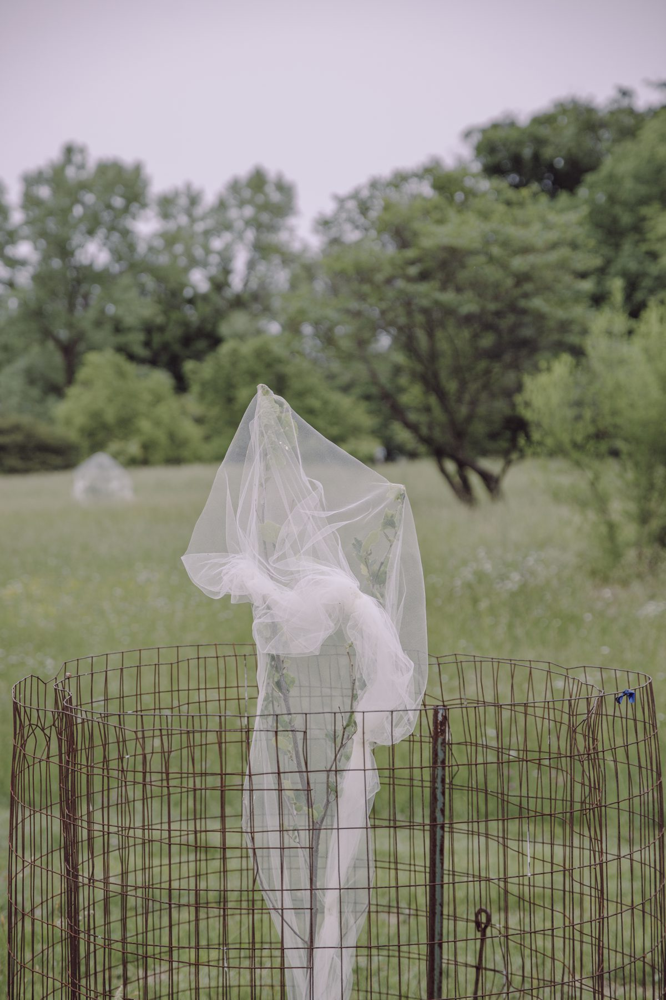